A DAG displays assumptions about the relationship between variables (often called nodes in the context of graphs). The assumptions we make take the form of lines (or edges) going from one node to another. These edges are directed, which means to say that they have a single arrowhead indicating their effect. Here’s a simple DAG where we assume that x affects y:
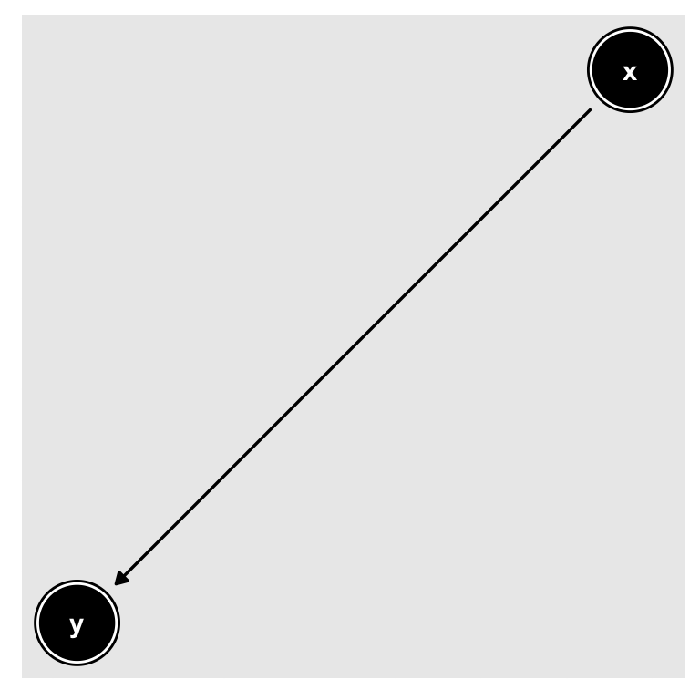
You also sometimes see edges that look bi-directed, like this:
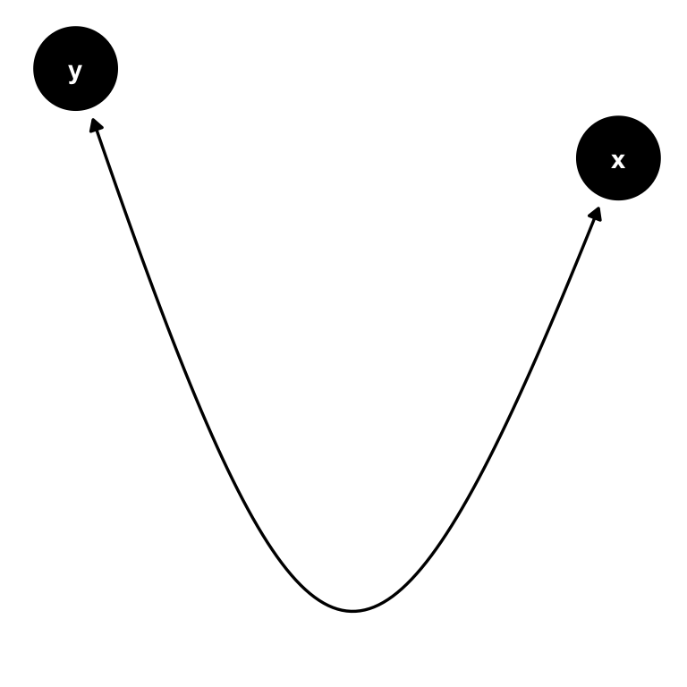
But this is actually shorthand for an unmeasured cause of the two variables (in other words, unmeasured confounding):
# canonicalize the DAG: Add the latent variable in to the graph
dagify(y ~~ x) %>%
ggdag_canonical() 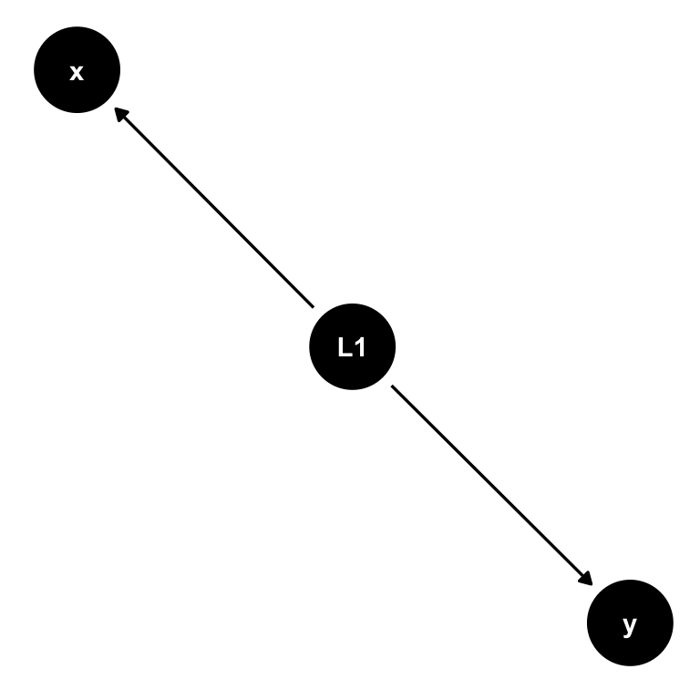
A DAG is also acyclic, which means that there are no feedback loops; a variable can’t be its own descendant. The above are all DAGs because they are acyclic, but this is not:
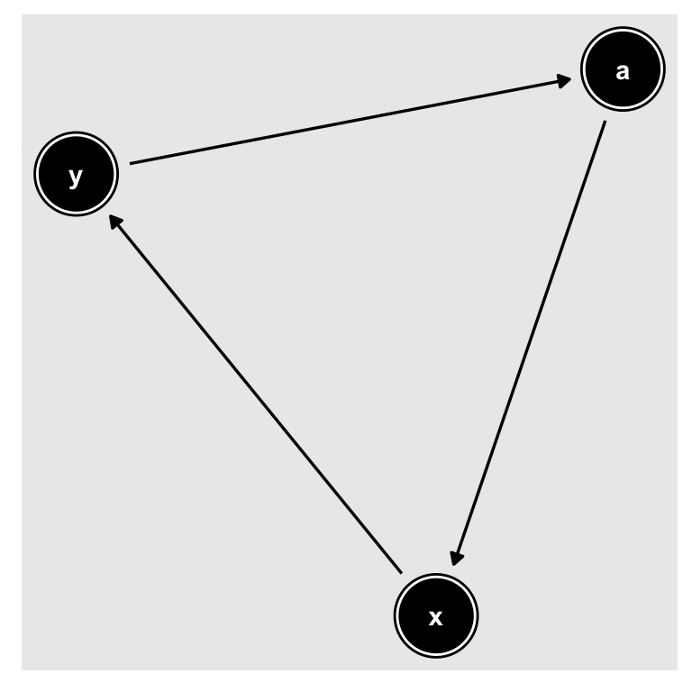
ggdag is more specifically concerned with structural causal models (SCMs): DAGs that portray causal assumptions about a set of variables. Beyond being useful conceptions of the problem we’re working on (which they are), this also allows us to lean on the well-developed links between graphical causal paths and statistical associations. Causal DAGs are mathematically grounded, but they are also consistent and easy to understand. Thus, when we’re assessing the causal effect between an exposure and an outcome, drawing our assumptions in the form of a DAG can help us pick the right model without having to know much about the math behind it. Another way to think about DAGs is as non-parametric structural equation models (SEM): we are explicitly laying out paths between variables, but in the case of a DAG, it doesn’t matter what form the relationship between two variables takes, only its direction. The rules underpinning DAGs are consistent whether the relationship is a simple, linear one, or a more complicated function.
Let’s say we’re looking at the relationship between smoking and cardiac arrest. We might assume that smoking causes changes in cholesterol, which causes cardiac arrest:
smoking_ca_dag <- dagify(cardiacarrest ~ cholesterol,
cholesterol ~ smoking + weight,
smoking ~ unhealthy,
weight ~ unhealthy,
labels = c("cardiacarrest" = "Cardiac\n Arrest",
"smoking" = "Smoking",
"cholesterol" = "Cholesterol",
"unhealthy" = "Unhealthy\n Lifestyle",
"weight" = "Weight"),
latent = "unhealthy",
exposure = "smoking",
outcome = "cardiacarrest")
ggdag(smoking_ca_dag, text = FALSE, use_labels = "label")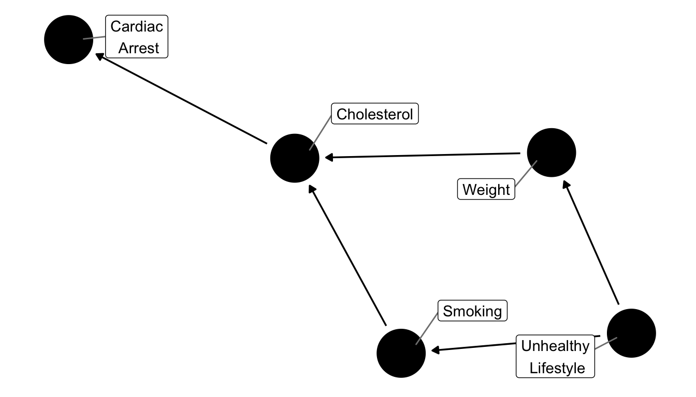
The path from smoking to cardiac arrest is directed: smoking causes cholesterol to rise, which then increases risk for cardiac arrest. Cholesterol is an intermediate variable between smoking and cardiac arrest. Directed paths are also chains, because each is causal on the next. Let’s say we also assume that weight causes cholesterol to rise and thus increases risk of cardiac arrest. Now there’s another chain in the DAG: from weight to cardiac arrest. However, this chain is indirect, at least as far as the relationship between smoking and cardiac arrest goes.
We also assume that a person who smokes is more likely to be someone who engages in other unhealthy behaviors, such as overeating. On the DAG, this is portrayed as a latent (unmeasured) node, called unhealthy lifestyle. Having a predilection towards unhealthy behaviors leads to both smoking and increased weight. Here, the relationship between smoking and weight is through a forked path (weight <- unhealthy lifestyle -> smoking) rather than a chain; because they have a mutual parent, smoking and weight are associated (in real life, there’s probably a more direct relationship between the two, but we’ll ignore that for simplicity).
Forks and chains are two of the three main types of paths:
An inverted fork is when two arrowheads meet at a node, which we’ll discuss shortly.
There are also common ways of describing the relationships between nodes: parents, children, ancestors, descendants, and neighbors (there are a few others, as well, but they refer to less common relationships). Parents and children refer to direct relationships; descendants and ancestors can be anywhere along the path to or from a node, respectively. Here, smoking and weight are both parents of cholesterol, while smoking and weight are both children of an unhealthy lifestyle. Cardiac arrest is a descendant of an unhealthy lifestyle, which is in turn an ancestor of all nodes in the graph.
So, in studying the causal effect of smoking on cardiac arrest, where does this DAG leave us? We only want to know the directed path from smoking to cardiac arrest, but there also exists an indirect, or back-door, path. This is confounding. Judea Pearl, who developed much of the theory of causal graphs, said that confounding is like water in a pipe: it flows freely in open pathways, and we need to block it somewhere along the way. We don’t necessarily need to block the water at multiple points along the same back-door path, although we may have to block more than one path. We often talk about confounders, but really we should talk about confounding, because it is about the pathway more than any particular node along the path.
Chains and forks are open pathways, so in a DAG where nothing is conditioned upon, any back-door paths must be one of the two. In addition to the directed pathway to cardiac arrest, there’s also an open back-door path way through the forked path at unhealthy lifestyle and on from there through the chain to cardiac arrest:
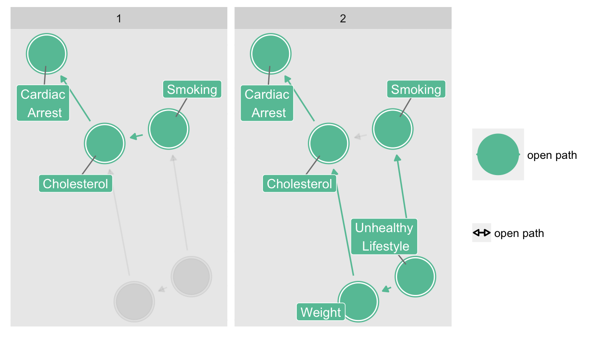
We need to account for the back-door path in our analysis. There are many ways to go about that–stratification, including the variable in a regression model, matching, inverse probability weighting–all with pros and cons. But each strategy must include a decision about which variables to account for. Many analysts take the strategy of putting in all possible confounders. This can be bad news, because adjusting for colliders and mediators can introduce bias, as we’ll discuss shortly. Instead, we’ll look at minimally sufficient adjustment sets: sets of covariates that, when adjusted for, block all back-door paths, but include no more or no less than necessary. That means there can be many minimally sufficient sets, and if you remove even one variable from a given set, a back-door path will open. Some DAGs, like the first one in this vignette (x -> y), have no back-door paths to close, so the minimally sufficient adjustment set is empty (sometimes written as “{}”). Others, like the cyclic DAG above, or DAGs with important variables that are unmeasured, can not produce any sets sufficient to close back-door paths.
For the smoking-cardiac arrest question, there is a single set with a single variable: {weight}. Accounting for weight will give us an unbiased estimate of the relationship between smoking and cardiac arrest, assuming our DAG is correct. We do not need to (or want to) control for cholesterol, however, because it’s an intermediate variable between smoking and cardiac arrest; controlling for it blocks the path between the two, which will then bias our estimate (see below for more on mediation).
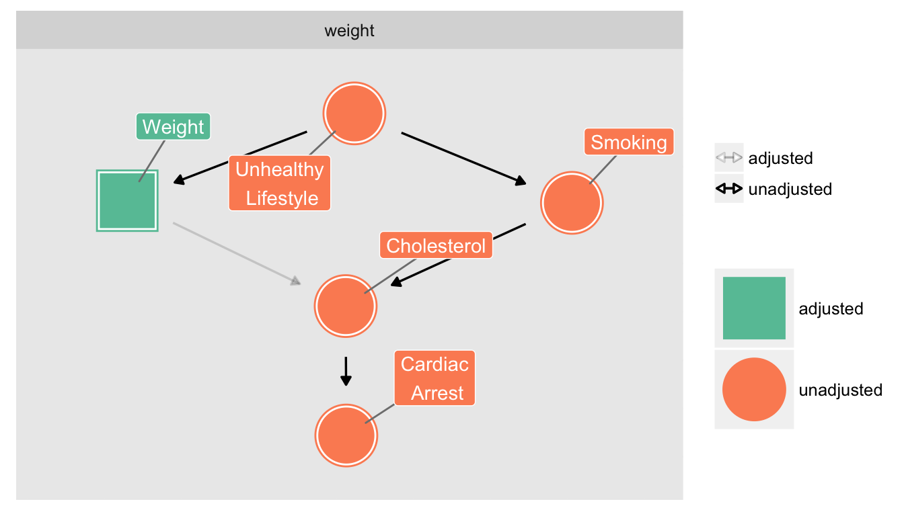
More complicated DAGs will produce more complicated adjustment sets; assuming your DAG is correct, any given set will theoretically close the back-door path between the outcome and exposure. Still, one set may be better to use than the other, depending on your data. For instance, one set may contain a variable known to have a lot of measurement error or with a lot of missing observations. It may, then, be better to use a set that you think is going to be a better representation of the variables you need to include. Including a variable that doesn’t actually represent the node well will lead to residual confounding.
What about controlling for multiple variables along the back-door path, or a variable that isn’t along any back-door path? Even if those variables are not colliders or mediators, it can still cause a problem, depending on your model. Some estimates, like risk ratios, work fine when non-confounders are included. This is because they are collapsible: risk ratios are constant across the strata of non-confounders. Some common estimates, though, like the odds ratio and hazard ratio, are non-collapsible: they are not necessarily constant across strata of non-confounders and thus can be biased by their inclusion. There are situations, like when the outcome is rare in the population (the so-called rare disease assumption), or when using sophisticated sampling techniques, like incident-density sampling, when they approximate the risk ratio. Otherwise, including extra variables may be problematic.
In a path that is an inverted fork (x -> m <- y), the node where two or more arrowheads meet is called a collider (because the paths collide there). An inverted fork is not an open path; it is blocked at the collider. That is to say, we don’t need to account for m to assess for the causal effect of x on y; the back-door path is already blocked by m.
Let’s consider an example. Influenza and chicken pox are independent; their causes (influenza viruses and the varicella-zoster virus, respectively) have nothing to do with each other. In real life, there may be some confounders that associate them, like having a depressed immune system, but for this example we’ll assume that they are unconfounded. However, both the flu and chicken pox cause fevers. The DAG looks like this:
fever_dag <- collider_triangle(x = "Influenza",
y = "Chicken Pox",
m = "Fever")
ggdag(fever_dag, text = FALSE, use_labels = "label")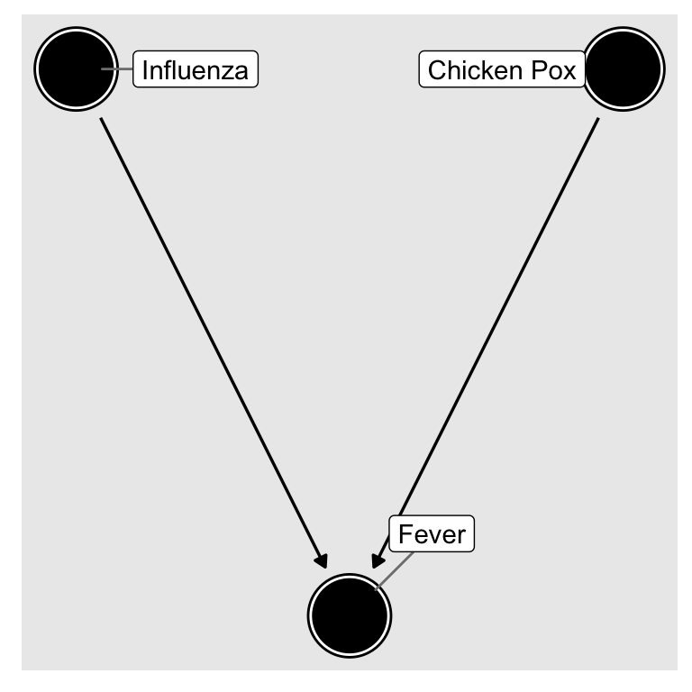
If we want to assess the causal effect of influenza on chicken pox, we do not need to account for anything. In the terminology used by Pearl, they are already d-separated (direction separated), because there is no effect on one by the other, nor are there any back-door paths:
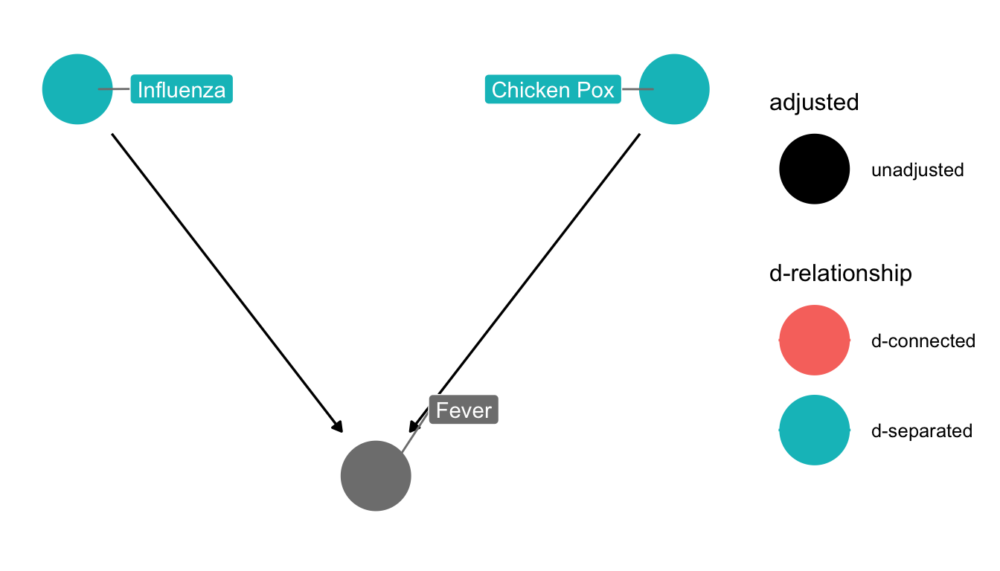
However, if we control for fever, they become associated within strata of the collider, fever. We open a biasing pathway between the two, and they become d-connected:
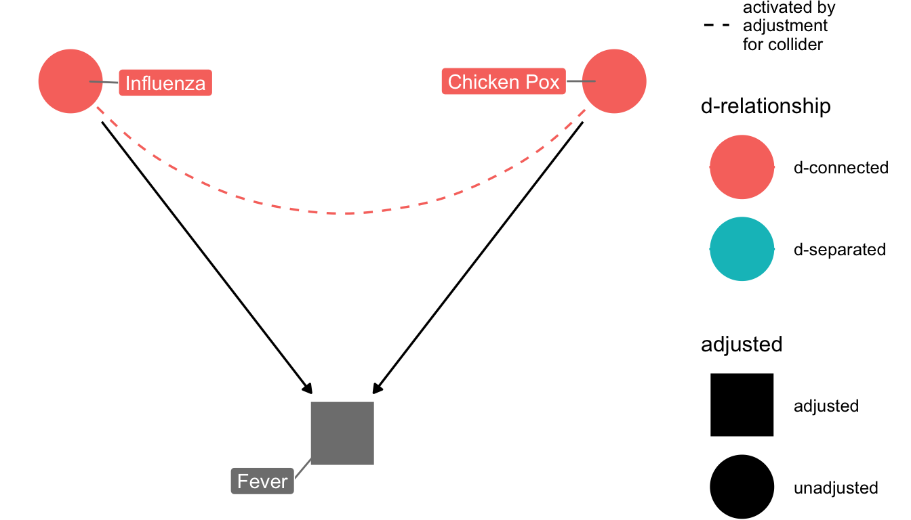
This can be counter-intuitive at first. Why does controlling for a confounder reduce bias but adjusting for a collider increase it? It’s because whether or not you have a fever tells me something about your disease. If you have a fever, but you don’t have the flu, I now have more evidence that you have chicken pox. Pearl presents it like algebra: I can’t solve y = 10 + m. But when I know that m = 1, I can solve for y.
Unfortunately, there’s a second, less obvious form of collider-stratification bias: adjusting on the descendant of a collider. That means that a variable downstream from the collider can also cause this form of bias. For example, with our flu-chicken pox-fever example, it may be that having a fever leads to people taking a fever reducer, like acetaminophen. Because fever reducers are downstream from fever, controlling for it induces downstream collider-stratification bias:
dagify(fever ~ flu + pox,
acetaminophen ~ fever,
labels = c("flu" = "Influenza",
"pox" = "Chicken Pox",
"fever" = "Fever",
"acetaminophen" = "Acetaminophen")) %>%
ggdag_dseparated(from = "flu", to = "pox", controlling_for = "acetaminophen",
text = FALSE, use_labels = "label")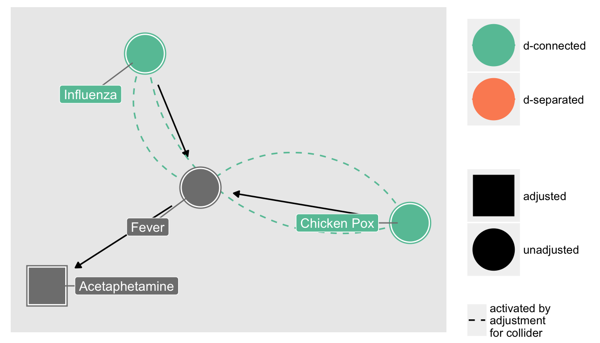
Collider-stratification bias is responsible for many cases of bias, and it is often not dealt with appropriately. Selection bias, missing data, and publication bias can all be thought of as collider-stratification bias. It becomes trickier in more complicated DAGs; sometimes colliders are also confounders, and we need to either come up with a strategy to adjust for the resulting bias from adjusting the collider, or we need to pick the strategy that’s likely to result in the least amount of bias. See the vignette on common structures of bias for more.
Controlling for intermediate variables also induces bias, because it decomposes the total effect of x on y into its parts. Depending on the research question, that may be exactly what you want, in which case you should use mediation analysis, e.g. via SEM, which can estimate direct, indirect, and total effects. However, returning to the smoking example, we only care about how smoking affects cardiac arrest, not the pathways through cholesterol it may take. Moreover, since cholesterol (at least in our DAG) intercepts the only directed pathway from smoking to cardiac arrest, controlling for it will block that relationship; smoking and cardiac arrest will appear unassociated (note that I’m not including the paths opened by controlling for a collider in this plot for clarity):
ggdag_dseparated(smoking_ca_dag, controlling_for = c("weight", "cholesterol"),
text = FALSE, use_labels = "label", collider_lines = FALSE)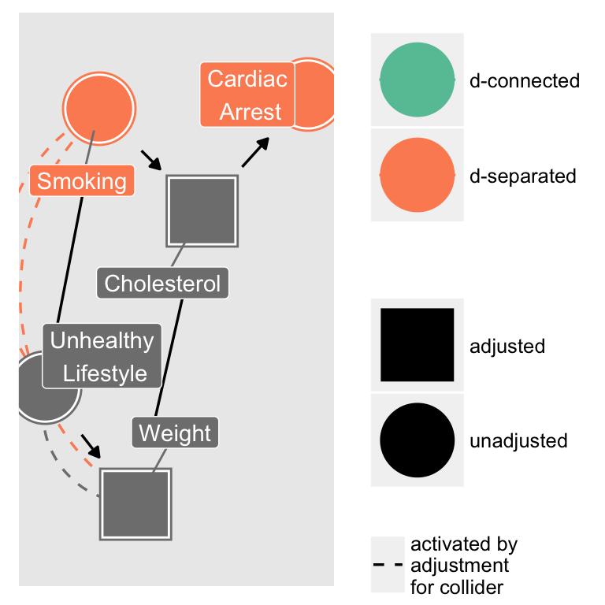